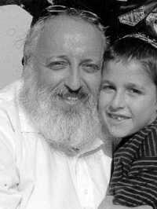

Anything to Help a Fellow Jew

If we could have asked Yossel (Rabbi Yosef is too formal) what he thought of our writing this article about him, he would have “given it to us over the head.” He was a p’nimius’dike Chassid who did his work with a lot of excitement and simcha, but without a drop of showiness and pride. Sounds impossible? Only to someone who did not know him.
Chassidim don’t eulogize; they tell stories about the departed, because from stories we can learn a lesson in avodas Hashem. From Yossel there is plenty to learn. He wasn’t an askan (communal activist) but many askanim could learn what askanus is from him. He did not have the title of shliach but his entire life was a shlichus to be mekarev Yidden, and many Chassidim can learn that from him. Above all else, his Ahavas Yisroel was enormous and this is something every one of us can and must learn from him.
Without getting paid, he was able to rope in top lawyers in Manhattan and top doctors on Long Island on behalf of his fellow Jews. He got involved in mivtzaim with people that others would prefer to skip such as prison inmates, dropouts, and the like. And it’s not like he wasn’t busy enough with the doctors and lawyers mentioned above.
Despite all the tzaros and hardships that he endured, it didn’t stop him from perpetually smiling. He was always happy and always ready to help.
THE REBBE NAMED HIM
Yosef Tewel (Tevel) was born on 3 Shevat 5715. His parents were Reb Avrohom and Doba (nee Reitzes). The Rebbe was involved in all the details of the shidduch of his parents who had come over from the refugee camps. The Rebbe even chose the name “Yosef” for him and not “Yosef Yitzchok,” and the story goes like this:
Since he was born on 3 Shevat with the bris on Yud Shevat, they thought of having the bris done at the Ohel. When they presented the idea to the Rebbe in yechidus, the Rebbe said: The main thing is, don’t forget to name him for the shver (i.e. the Rebbe Rayatz – Rabbi Yosef Yitzchok).
When they left the Rebbe’s room, it dawned on them that they had a problem. Mrs. Tewel’s father’s name was Reb Shmuel Yitzchok, so the name Yitzchok was not available. Ashkenazim do not name for people who are alive.
When Reb Shmuel Yitzchok heard the Rebbe’s instruction, he accepted it with characteristic Chassidishe matter-of-factness. He assumed that the baby would be named “Yosef Yitzchok” and he thought that this meant he would soon leave this world. He started doing t’shuva from the depths of his heart to rectify his few decades spent in this world. His wife quickly sent in a note to the Rebbe with a request for a bracha.
The Rebbe’s response was: I did not mean that at all. He should be named just Yosef. The main thing is not to mix [names of Rebbeim with names of Chassidim].
BIKUR CHOLIM
Yossel began his work with Bikur Cholim organizations in Boro Park and Williamsburg in the 80’s. His children relate that at Shomrei Shabbos in Boro Park they would pack hundreds of packages of food, coats, shirts, etc. and he would have them put the packages near people’s doors and then run away so nobody would know where it came from.
Together with Rabbi Avrohom Leider, they started Ahavas Chesed in Crown Heights. They arranged for doctors in Crown Heights to take part in an on-call rotation in the event that a woman had to give birth. In such a situation, the woman was also taken to the hospital free of charge. When he became aware that there were homes in the community without heat, he bought a few hundred heaters and distributed them so nobody would be cold in the winter. For Pesach he would bring about two hundred suits to distribute to those in need.
BIRTHDAY MIVTZA
It’s hard to say that there was one particular Ahavas Yisroel-related mitzva that Yossel excelled in more than any other. Chesed, Bikur Cholim, Tz’daka, Hachnasas Orchim – they were all favorites. Birthdays were also very important to him and they were always great celebrations. Why? Listen to this:
Friday morning, 13 Elul 5752, Yossel went to see a big doctor at SUNY Downstate Medical Center in order to show him X-rays of someone whom the doctors feared had a malignancy. As soon as he walked in, the surprised doctor (Yossel did not make an appointment, of course) said, “Yossel! Are you a prophet? Come in!” and he told the secretary that he was in an important meeting and couldn’t be disturbed. This was a doctor for whom you had to wait three months in order to see him and yet here he was, in an important meeting with Yossel Tewel.
“Yossel,” said the doctor, who was Jewish but not religiously observant, “tell me about Schneersohn.”
“Oh, you mean Rabbi Schneersohn,” Yossel gently corrected him.
“Fine, Rabbi Schneersohn. Tell me about him.”
How does a Chassid describe his Rebbe as a “Tzaddik, Navi, etc.” when this isn’t even the tip of the iceberg of who and what he really is?
“Well, we recently had the Persian Gulf War in which the Iraqis used Scud missiles. In Israel, people were terrified. The only one who said there is nothing to be afraid of was the Rebbe. He said they should publicize the words of the Yalkut Shimoni: ‘Humble ones, the time for your redemption has arrived.’
“And just two weeks ago, there was Hurricane Andrew that was heading for Miami. The city was evacuated except for the Lubavitchers who remained because the Rebbe shook his head ‘no’ when asked whether to leave. The hurricane unexpectedly veered off and headed directly for the city where many had fled.
“Enough of the global stories; here is a personal story. My father, a Holocaust survivor, came to America in the 50’s. His father had been murdered Erev Yom Kippur when he took the Nazis (supposedly) to show them where Jews were hiding. He led them somewhere else which enabled the Jews to flee, and was killed on the spot. My father, his oldest son, endangered himself by running to get a tallis with which to wrap my grandfather and bury him. When he came to America, he could have bought a butcher store and supported himself. He chose not to since his father-in-law, Rabbi Shmuel Yitzchok Reitzes, said G-d forbid, it shouldn’t happen that he provide treif meat to Jews.
“My father had a yechidus with his children in order to ask for a bracha for his mother, Miriam Baila, who was also a war survivor and was seriously ill. They all submitted their notes to the Rebbe. The Rebbe looked up and said, ‘Whose birthday is it?’ When nobody responded, the Rebbe asked the question again and went back to reading the notes. Before they left the Rebbe’s room, the Rebbe asked the question a third time.
“When we left yechidus, we were bewildered. We all went to sleep except for my father who couldn’t settle down. He tossed and turned as he wondered, ‘When is my birthday?’
“In the days before the war, people often did not know their birthdays. The date written in their passport was usually inaccurate and the Jewish date was of no interest to anyone except for parents who remembered it in order to make a bar mitzva.
“The next morning, my father went to the hospital. That day was one of her better days and as soon as he walked in, he asked her, ‘Do you know when my birthday is?’ She replied, ‘Of course, the 18th of Av.’ Needless to say, that was that day’s date.
“My father went to 770. When the Rebbe came out for Mincha, he stood in the Rebbe’s path and said, ‘Rebbe, I know whose birthday it is.’ The Rebbe smiled and blessed him with a year of success and blessing.
“The Rebbe is like Moshe. Moshe Rabbeinu was chosen to lead the Jewish people because he cared about even a little sheep. The Rebbe, who gets more mail than the White House, who records Torah insights nonstop, who meets with people about the most vital of issues, found the time to remind a Holocaust survivor that he has a birthday. The Rebbe strongly emphasized celebrating birthdays, and so a computer program was devised that can convert the civil birthday to the Jewish date.”
“Really?!” exclaimed the doctor. “You can find out what my Jewish birthday is?”
“Definitely,” said Yossel as he took the phone and called Tzach. Nechemia Kessler a”h answered the phone; when he heard what Yossel wanted he sighed. At the time, the program wasn’t easy to use, so he asked him to call back on Monday. “It’s Friday and people are rushing off to do mivtzaim.” But when he heard why Yossel was calling, he agreed to look it up for him. A few minutes later he had the answer – 13 Elul.
Yossel immediately excused himself. The doctor, who wanted to know if he had an answer for him, had to wait until Yossel returned. “Come back! I still haven’t explained why I asked about Rabbi Schneersohn!”
Yossi had already left. He drove quickly to Crown Heights where he picked up his brother Pinny and went to the bakery where he bought a birthday cake. He grabbed a bottle of mashke and hurried back to the hospital to the doctor’s office. He burst in, holding the cake and with a loud, “Happy Birthday!” greeting.
It took the stunned doctor a few moments to digest the fact that Yossel wasn’t kidding and it was, in fact, his Jewish birthday. He took a yarmulke out of a drawer and said, “See, I’m also Jewish.” It was the first time in his life that he was celebrating his Jewish birthday and he wanted to do so with a yarmulke.
After a brief birthday farbrengen – it was Friday, after all – Yossel got ready to leave. The doctor stopped him and said, “Do you know why I asked you whether you are a prophet when you came, and why I asked you to tell me about Rabbi Schneersohn?
“This morning I got a phone call from a colleague, a gentile, who yelled, ‘Irving, he answered me! I got an answer!’ I had no idea what he was talking about. Then he told me, ‘A few years ago, I got home late at night and sat down to watch television. As I flipped through the channels, I saw an angel, a man who looked angelic. I watched him and listened to some of the translation of his talk. I did not understand it all, but the little bit that I understood I loved. At the end of the broadcast, a telephone number was posted. I called the number and found out when the next event would take place. Since then, each time the ‘angel’ spoke, I would sit and watch.
“‘For several years I would watch his broadcast. I came to the conclusion that this man is very righteous and worthy of being the true Messiah. A few months ago, the rabbi had a stroke and I felt terrible. I missed this good man with the face of an angel whose name, I now knew, was Rabbi Schneersohn. After a few months, in which I saw that his condition did not improve, I decided I wanted to send him get-well greetings. I bought a card and added a few lines of my own in which I said I hoped he would soon be better, and I included a note with some questions that were on my mind that I wanted to ask him. I concluded by saying that I hoped we would soon be able to sit together and resolve these issues.’
“Several weeks went by and my friend, the gentile doctor, could not understand why he did not receive a reply. Even when you write to the president of the United States you get some sort of response, and here there was nothing. He was somewhat disillusioned.
“He continued, ‘Last night, I had a dream. In my dream, I was standing in a crowd waiting for the Rebbe. When the Rebbe strode in majestically, he looked beyond his staff (the secretaries) and said to me, in English, “Thank you for your good wishes. There is no need to be sad.” And the Rebbe went on to respond to all my questions.
“‘I woke up in confusion and shock. I pinched myself to see whether I was still dreaming. I began thinking about the questions and the answers I had received and was amazed. All my doubts had been resolved; every question had an answer! I felt I had to share this with a Jewish friend and that’s why I called you.’
“I got that phone call this morning,” said the Jewish doctor. “I was wondering who was the angelic-faced man who so impressed my friend and then you showed up. That’s why my first question to you was: who is Rabbi Schneersohn.”
***
On Chol HaMoed Sukkos, about a month later, Yossel Tewel took his children on an outing, as he did every year, to the attractions in Boro Park. His children related, “Suddenly, we heard shouting: ‘It’s his fault! He did it!’”
From among the straimlach of the Chassidim standing there emerged the doctor with the yarmulke on his head. “You don’t know what you did to me!” he said to Yossel. “After what happened, I couldn’t calm down. On Rosh HaShana I went to shul. On Yom Kippur I fasted the entire fast for the first time in my life. I even built a sukka near my house. But since there is no Jewish community where I live and nothing going on, I decided to bring my grandchildren here so they can see what a Jewish holiday looks like.”
The son Mendel picks up the story. “Before my father’s birthday, I thought about what would make him happy [in the next world] in honor of his birthday. I remembered that my father always regretted that he hadn’t offered t’fillin to that doctor. So I called the doctor and arranged to meet him. When I met with the now older man, he remembered the extraordinary story and the impression my father made on him. I told him that my grandfather had died while wearing tallis and t’fillin like a tzaddik, and maybe this was because he buried his father in a tallis with mesirus nefesh. This made a tremendous impression on him.
“He said that he had bought tallis and t’fillin and once a week, on Sundays, he put on the t’fillin and davened. He asked me when his birthday is and wrote it down. We sat together for nearly an hour while all those waiting to see him waited outside. He had many questions about Judaism, from the laws of kashrus to the Holocaust.”
Since that incident with the doctor and his birthday, Yossel made a big deal about every birthday. His Koch in Mivtza Yom Huledes is something anybody who knew him was familiar with.
Reb Yossel, who passed on the day after his 55th birthday, participated in a birthday farbrengen held by his family from his hospital bed, via telephone. One of the participants in the conference call was Sholom Mordechai Rubashkin, someone for whom Yossi fought tirelessly in the face of his legal difficulties. On the previous Shabbos, he had an aliya and held a Chassidishe farbrengen before collapsing on his way home from 770. On his birthday, Henoch Junik put t’fillin on him and reviewed a maamer at his side, so he fulfilled nearly all the customs that pertain to a birthday. Like his father who was moser nefesh for burial in a tallis and who himself passed away while wearing his tallis, Yossi was moser nefesh for the birthday campaign and he passed away after fulfilling the birthday customs for the last time in his life.
In the sicha of Shabbos Parshas VaYeitzei 5752, the Rebbe speaks at length about tzaddikim who die on their birthday which symbolizes the completion of their avoda. Perhaps it was the same for Yossel, except Heaven did not want to take him in the middle of his birthday, something that he had cherished so much.
PRISON VISITATIONS
Yossel served as an unofficial shliach to prisons in New York. How did he get involved in this unglamorous pursuit? One day, he was standing in front of 770 when someone asked him for a donation for Meir Kahane who was in prison. “The famous Meir Kahane? Why does he need me?!”
The man bitterly replied, “Meir Kahane is sitting like a dog in jail.”
“What! How can I get to see him?”
Five minutes later, Yossel was in Mermelstein’s restaurant, buying franks and some other food. He then drove off to the jail in the Catskills, an hour and a half from 770. When he arrived, the guard refused to let him in since his name did not appear on the list of approved visitors. After a few phone calls to Rabbi J. J. Hecht, he was let in.
Yossel had to wait until they brought Meir Kahane out. He looked terrible. He told Yossel that he couldn’t even eat the kosher food since they prepared it in the dirty kitchen with unwashed hands that had handled treif. The only things he ate were fruits with peels which the Moslem inmates brought him since they respected him. As for a prepackaged kosher meal, something that is readily available today after nearly forty years of Chabad outreach, they didn’t dream of it then. When Yossel offered him the food he had brought, Meir Kahane refused to eat until they brought another four Jewish inmates so they could eat too.
This was the impetus for the tremendous outreach work Yossel did in prisons. Huge quantities of kosher food, menorahs, mishloach manos, the Piamenta band and lots of simcha were only some of the things he brought with him.
One time, Yossel entered a large prison lugging large packages of food for the Jewish prisoners. A burly, bald anti-Semitic guard wearing boots was standing there, giving off the air of an actual Nazi. When he saw Jews coming in with bags of food, he told one of his underlings to throw it all in the garbage. They tried explaining that they always brought food, but he didn’t care.
As they argued with him, the man snarled, “If only Hitler had finished the job!”
When Yossel heard that, he demanded that they allow him to leave and the rest of them should remain inside. That’s not a simple thing to do in a prison, but it was hard to refuse him. When he went out, he went over to a public phone and called Rabbi J. J. Hecht. Rabbi Hecht asked him to wait on the line.
“Hey Mario, what kind of people do you employ?” Yossel heard Rabbi Hecht say. Mario Cuomo was the governor of New York at the time (he was governor from 1983-1994).
“Yossel, go back inside and the matter will be taken care of within minutes,” said R’ Hecht.
Yossel went back in and the guard began shouting at him, but he insisted on waiting. Within five minutes the prison warden and some assistants arrived and asked, “Where’s the rabbi? What’s going on here?”
A few minutes later, the anti-Semitic guard came out in handcuffs, a most unusual sight. The warden said, “Rabbi, here’s my card. If you ever need anything, you can call me directly; you don’t have to call the governor.”
On another occasion, it was Chanuka and when Yossel showed up with a group of fellow Lubavitchers, they heard the doors suddenly closing behind them. To their dismay, the two guards who were supposed to escort the group remained on the other side of the doors. Moments later, the doors on the other side that opened to the cells began to open. About a hundred black men were returning from playing basketball. When they saw the Jews, they got mad. One of them shouted, “Kill the baby murderers!” and they all began to chant after him.
The area was small and the Lubavitchers were terrified. “We saw murder in their eyes,” recalled his brother Pinny. “We realized that the anti-Semitic guards had purposely left us there so that the inmates could do as they pleased with us. Afterwards, they would say there was nothing they could do. Some of us said Shma Yisroel. I turned on the tape recorder we had with us to record what happened as a ‘black box’ of the lynching we expected would take place.”
Years later, Yossel would say that he did not know from where he got the strength. He suddenly began shouting, “Ay, oh, ah!” The blacks paused. “How many of you have ever met a good Jew?” he roared.
“I did!” “I did!” “I did!” said some of them.
“And how many of you want to eat kosher salami?” he shouted.
“Yeah, man, kosher salami!”
“So come and let’s do this right.” And as he did years before when he was a head counselor in camp, he had them all sit on the floor as he told his friends to use the menorahs to cut the salami.
“Okay, now everybody say after me: We!”
“We!” they all shouted.
“Want!”
“Want!”
“Moshiach!”
“Moshiach!”
“Now!”
“Now!”
The doors behind them opened and some guards dashed in. “What’s going on?”
They stopped in their tracks at the sight that met their eyes. One hundred dangerous inmates were sitting on the floor and shouting slogans while bearded fellows walked around giving out salami.
“Rabbi, if you want to work here, you are more than welcome! The job is waiting for you,” said one of the guards to Yossel.
Some years later, Yossel was walking on Eastern Parkway when he felt a hand on his shoulder. When he turned around he saw a big, Jamaican fellow.
“Rabbi, do you remember me?”
Yossel recalled, “I looked him up and down but it was nighttime and he was black and I couldn’t really see him. Then he smiled, so I saw something white.”
“Rabbi, you may not remember me but I can’t forget the tasty salami you brought us in jail.”
ENCOUNTER AT THE WASHINGTON MONUMENT
As part of his nonstop efforts on behalf of others, Yossel went to Washington to meet with a certain senator. On the way, he stopped to rest near the Washington Monument where he saw a peculiar sight. Near the monument were dozens of Indian tents. When he went over to take a better look, he heard a tourist ask one of the Indian women what they were doing there. She said they came from the other side of the country and were on their way to New York on a cross-country trip.
The tourist heard what she said; Yossel heard how she said it. There was something about her accent … “Excuse me, are you Jewish?” he asked the Israeli looking woman.
“Yes, of course,” she answered in surprise. “What are rabbis doing here?”
“More importantly, what are you doing here dressed as an Indian?” asked Yossel.
Yael was touring in America when she met a member of this tribe and married him. They had two children and she was bothered by the fact that they knew nothing about Judaism. As for leaving, forget about it. Their tribal culture was more extreme than the Arabs when it came to these things.
What could be done with the children? Circumcision was out of the question and the boy wasn’t yet the age of bar mitzva. How could he provide them with a little Judaism? In the meantime, the mother had gone to bring her little children to show them what a real rabbi looked like.
Yossel had a brainstorm – Jewish names. “We have to give them Jewish names! What are they called?”
She said, “Half-Moon and Crystalina.”
“Okay, let’s pick Jewish names.” Addressing the boy he said, “Your name is Half-Moon so your Jewish name is ‘Shnei-Ohr,’ which means ‘two lights.’ And he made a Mi Sh’Beirach. “Wow! Shneur! What a nice name.” Yossel explained whom he was named for.
“As for Crystalina, your name is Yahalom,” declared Yossel. Before they parted, Yossel gave Yael the address, 770 Eastern Parkway.
***
On Chanuka, Yossel would go with a group to a prison which was a two hour drive from New York. They were ready to set out when one of the bachurim insisted on remaining for the menorah lighting by the Rebbe (this was in the 80’s). Yossel tried to dissuade him but the bachur was so insistent that he agreed to wait.
In the middle of singing “HaNeiros HaLalu, someone walked into 770. “Are you Yossel Tewel? Someone outside wearing shmattes is looking for you.”
When he went out, he saw Yael and her children. The Indian tribe had arrived in Manhattan and she had decided she had to escape in order to thank Yossel for the beautiful names. They took her around Crown Heights and showed her the menorah lighting. She was impressed; her interest in Judaism had been ignited.
THE FISHIES
Long ago, when Yossel was a head counselor in camp in Montreal, there were a brother and sister from Hawaii whom everyone called “the fishies” since they could swim better than anyone else. In Hawaii there was nothing Jewish; so when they came on a visit to their grandfather in Montreal, he sent them to a Jewish camp.
The children were very sincere about what they had been taught and when they returned from camp they continued doing what they had learned. Their mother called them in to eat but they refused since they only ate kosher. The wealthy parents, who were liberal minded and believed in freedom of choice, went to the grocery store and found some kosher products and prepared a meal. At the next meal though, one of the children remembered that the dishes were not kosher and they had to buy new ones.
The school year began. After two days, the principal called the parents. The school was concerned that their son might be having a nervous breakdown or be going through some sort of social meltdown. Why? He was walking around with something on his head and strings coming out of his pants. Even his sister was wearing the yarmulke and tzitzis in solidarity with him.
Their father was a smart man. He met with the principal and offered a large donation if the school would have a “religion of the month” program in which the children would have to dress up and bring in clothing of that month’s religion. The designated religion for the first month would be, of course, Judaism.
The project began and the school was in an uproar. How could they get such a large quantity of yarmulkes and tzitzis? One call to Yossel in Crown Heights was all it took for the shipment to be sent out. After several weeks, Yossel got a picture of the entire school, boys and girls, wearing yarmulkes and tzitzis. The picture was submitted to the Rebbe who responded very warmly.
Beis Moshiach (staff). "Anything to Help a Fellow Jew." Beis Moshiach, no. 825 (February 29, 2012).